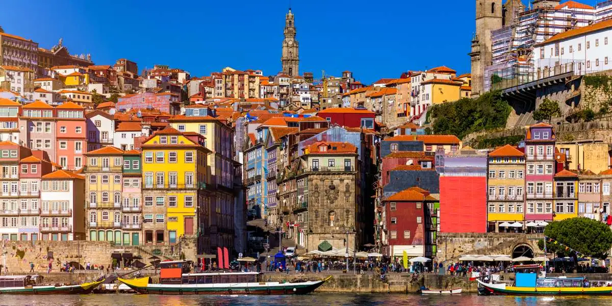

Free tours & experiencias
Los tours que me hacen vibrar
Reserva directamente con mi nombre en la casilla de recomendador — o escríbeme para una experiencia personalizada.


Free tour
Tour de Ribeira
La ruta esencial por la Ribeira, la Sé y los barrios más antiguos de Porto. Patrimonio UNESCO en cada esquina.
Reservar →
Especial
Harry Potter
Los rincones de Porto que inspiraron a J.K. Rowling. La Livraria Lello, el Café Majestic y mucho más.
Reservar →

Experiencia
Fado Presidencial
El espectáculo de fado más auténtico de Porto. Voucher especial a 15 € reservando conmigo.
Reservar · 15 € →

Day trip
Guimarães & Braga
Las ciudades medievales del norte de Portugal. Cuna de la nación, a una hora de Porto.
Reservar →